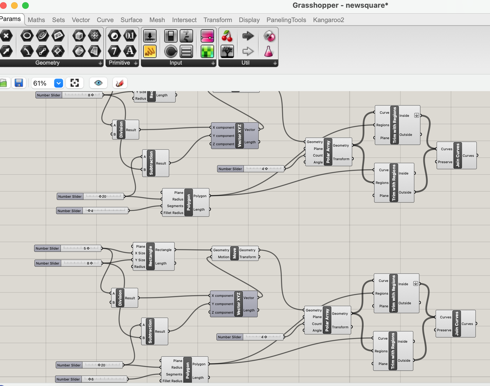
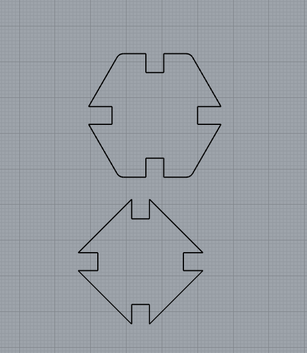
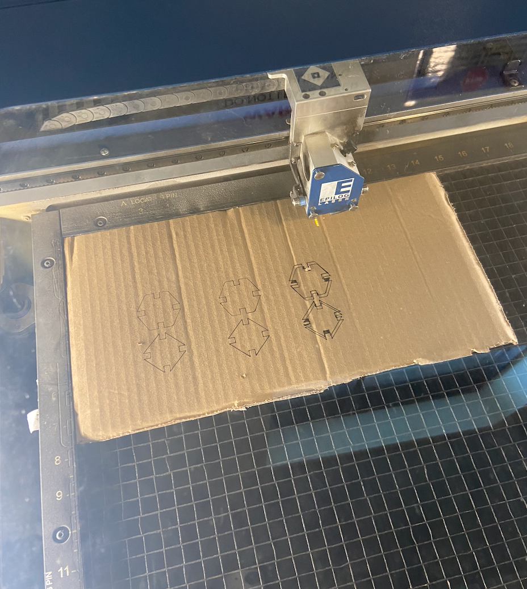

Since I had already done laser cutting last week, I felt more confident with this assignment, but I didn't have as much faith in my Grasshopper knowledge, so I started off with watching the video of the second week's lecture to familiarzie myself with the logic and Grasshopper file. I created two new Grasshopper files to make my new shapes.
|

|

|
For each shape, I used the 'Polygon' function in Grasshopper to choose the number of sides and size of the shape. For a square I chose 4 and a hexagon I chose 6 sides; both shapes had a radius of 20mm.
Then to create the rectangle cutouts, the main functions I used were 'Move', 'Vector XYZ', and 'Polar Array'. 'Move' allows the rectangle to move based on the information fed into 'Vector XYZ'. The vector was determined through moving the X and Y component. The X component was deteremined by half the width of the rectangle, which would center it on the shape. Y component was decided based on the radius of the shape, which allowed the rectangle to show up on the inside of the outer edge of the shape.
'Polar Array' was then used to create repeating cutouts around the shape, of which I created 4. Then for each shape, I trimmed the inner regions of the cutouts from the outer shape and baked after joining the curves.
To model it in 3D to represent the variable thickness in cardboard, I used the 'Extrude' function with a number slider to vary the Z axis of the shape, and I used the 'Surface' function to cap the shapes. Here are the results.
I left my square shape the same as the one from last week, but I wasn't sure how to create my arch shape (since it wasn't symmetrical on the x-axis), so I decided to create a hexagon. I learned how to use the Polygon function in grasshopper from a video. With these two new shapes, I grabbed cardboard from recycle bins on red square and headed to the MILL to cut 15 of each shape, resuting in 30 shapes.
After modeling my Grasshopper files in Rhino, I had to test out my shapes and determine the settings on the laser cutter machine because my cardboard was quite thick-- roughly 6.51mm.
Of course, the first few times I tested out the cuts, the laser didn't even cut through. My final settings were 15% speed, 100% power, and 50% frequency. I guess I needed a lot of power to cut through my thick cardboard
|
|

|
These are my final shapes.
I made my structure a rectangluar conctraption that could be an abstraction of a car. It was very different from my Assignment 1 octopus, and I was pretty happy with this.
Thanks to the class demo and the Youtube video I found online, I was able to get through this assignment really smoothly. Shoutout to Vanessa Chien Lai for her support and resource through this project.